Visual asset credits
Logos identify teams; team names and trademarks remain with their owners.
Original artwork
CS2 ARENA editorial illustrations, tournament artwork, neutral text fallbacks, and eight nonhuman gaming avatars were created specifically for this project as editable SVGs. They depict no real people, official game maps, or real event scenes. These original SVG assets are dedicated under CC0 1.0. This dedication does not apply to third-party team logos.
Team logos
Files are bundled locally, without color changes, cropping, filters, or effects. Source pages were checked on 19 October 2026. Teams without a verified asset (including Vitality) use an explicitly neutral text fallback, not an invented brand logo.
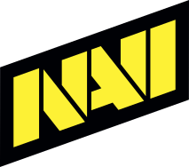
NAVI
Author: Natus Vincere
Source and rights statement · Public domain
None; original file, scaled with CSS only.
SPIRIT
Author: Team Spirit
Source and rights statement · CC BY-SA 4.0
None; original file, scaled with CSS only.
FAZE
Author: Faze Clan
Source and rights statement · Public domain
None; original file, scaled with CSS only.

MOUZ
Author: mousesports
Source and rights statement · Public domain
None; original file, scaled with CSS only.

ASTRALIS
Author: 69Zyr3x69
Source and rights statement · CC BY-SA 4.0
None; original file, scaled with CSS only.
FLYQUEST
Author: FlyQuest
Source and rights statement · Public domain
None; original file, scaled with CSS only.
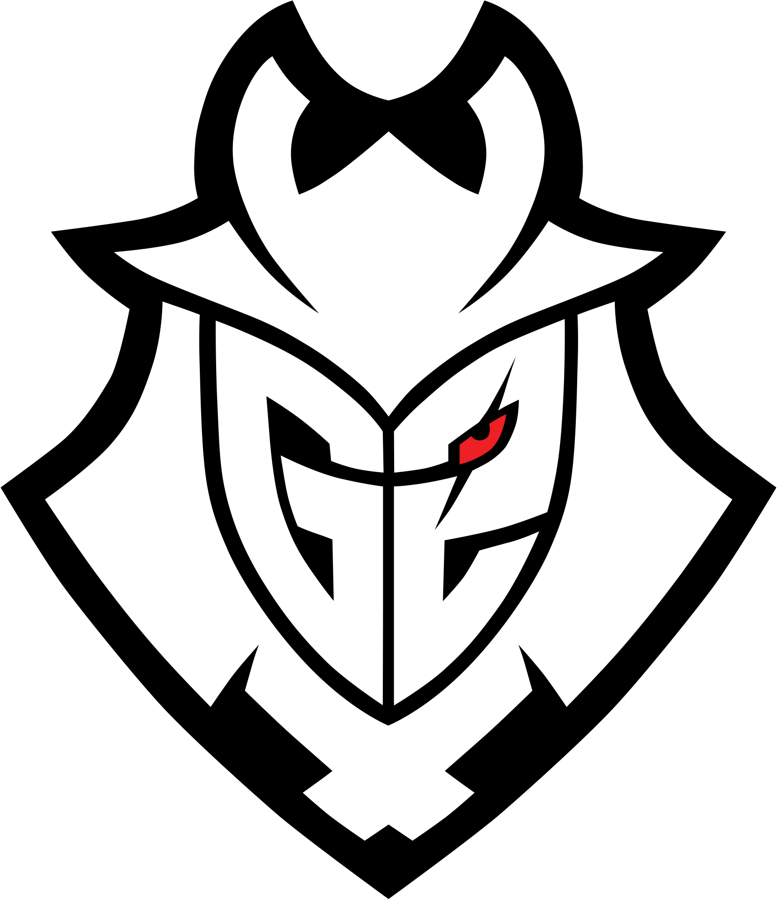
G2
Author: G2 Esports
Source and rights statement · Official media brand guidelines (not an open copyright license)
None. Original proportions and colors, no filters or effects.


Photography · reviewed 19 October 2026
These are archive images. City photographs illustrate the location only. Player portraits retain their original archive year and jerseys. CSS crops are available under the linked source license, including ShareAlike where applicable. Original downloaded files are preserved locally.
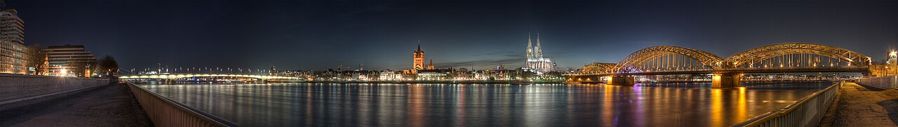
cologne
File:Cologne - Panoramic Image of the old town at dusk.jpg
Photographer: Ahgee
Source and identity/location metadata · CC BY-SA 3.0
Commons thumbnail, CSS cover crop and dark overlay only; no changes to downloaded pixels.
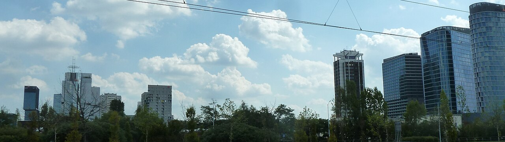
katowice
File:Katowice city centre (5).jpg
Photographer: TravelerFromEuropeanUnion
Source and identity/location metadata · CC0
Commons thumbnail, CSS cover crop and dark overlay only; no changes to downloaded pixels.
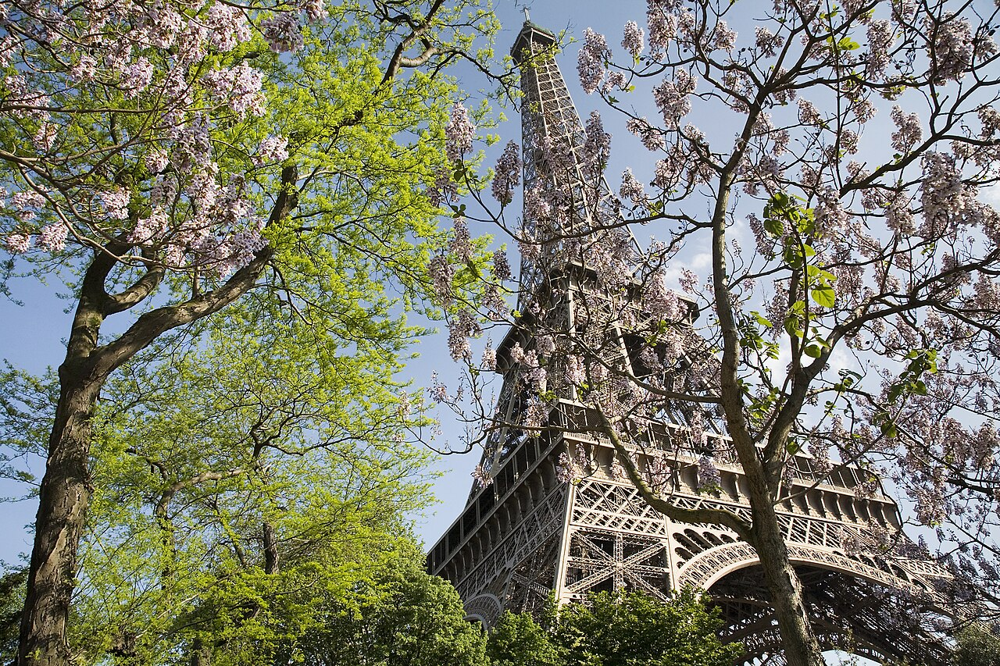
paris
File:Paris - The Eiffel Tower in spring - 2307.jpg
Photographer: Jorge Royan
Source and identity/location metadata · CC BY-SA 3.0
Commons thumbnail, CSS cover crop and dark overlay only; no changes to downloaded pixels.
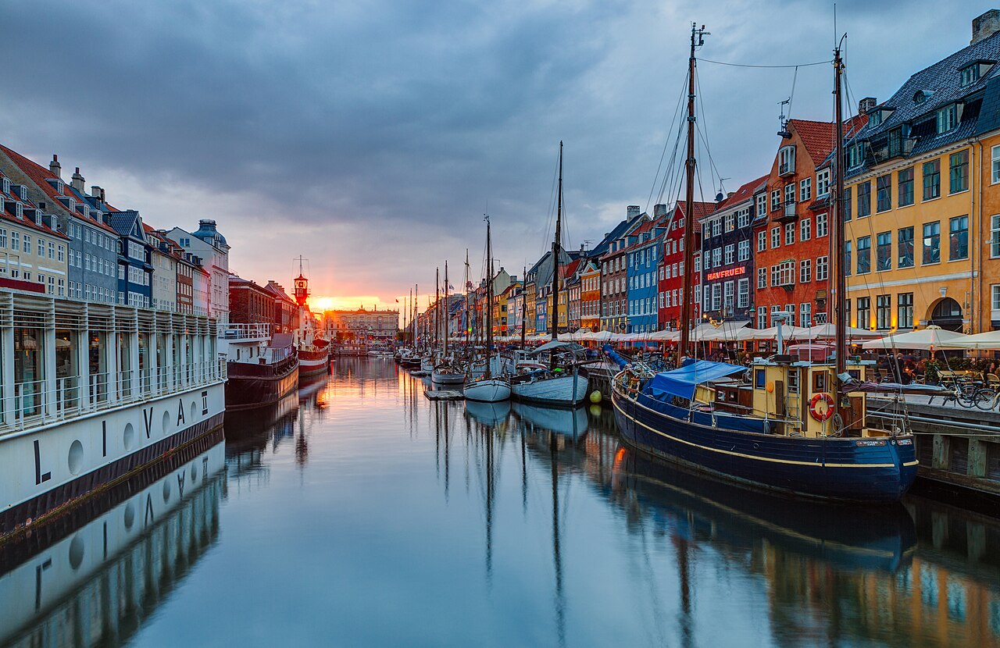
copenhagen
File:2018 - Nyhavn on sunset.jpg
Photographer: Moahim
Source and identity/location metadata · CC BY-SA 4.0
Commons thumbnail, CSS cover crop and dark overlay only; no changes to downloaded pixels.
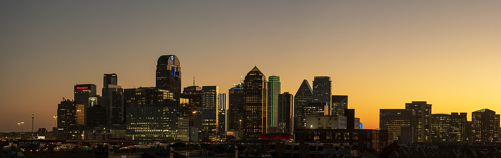
dallas
File:Dallas Skyline at Dusk.jpg
Photographer: Matthew T Rader
Source and identity/location metadata · CC BY-SA 4.0
Commons thumbnail, CSS cover crop and dark overlay only; no changes to downloaded pixels.
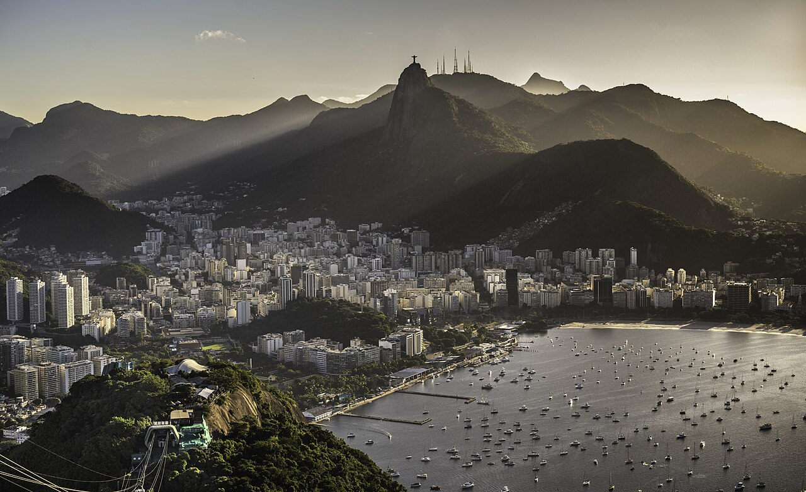
rio
File:Rio de Janeiro skyline and Sugarloaf Mountain at sunset, Brazil 3.jpg
Photographer: Wilfredor
Source and identity/location metadata · CC0
Commons thumbnail, CSS cover crop and dark overlay only; no changes to downloaded pixels.
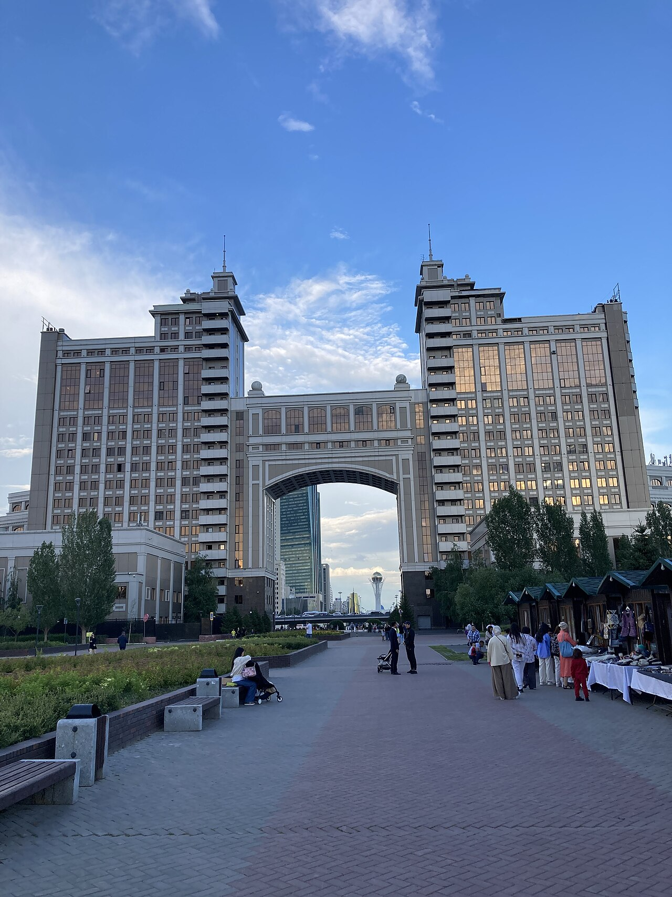
astana
File:City Gate, Astana, Skyline of Nur Sultan.jpg
Photographer: Nikolamikovic82
Source and identity/location metadata · CC0
Commons thumbnail, CSS cover crop and dark overlay only; no changes to downloaded pixels.
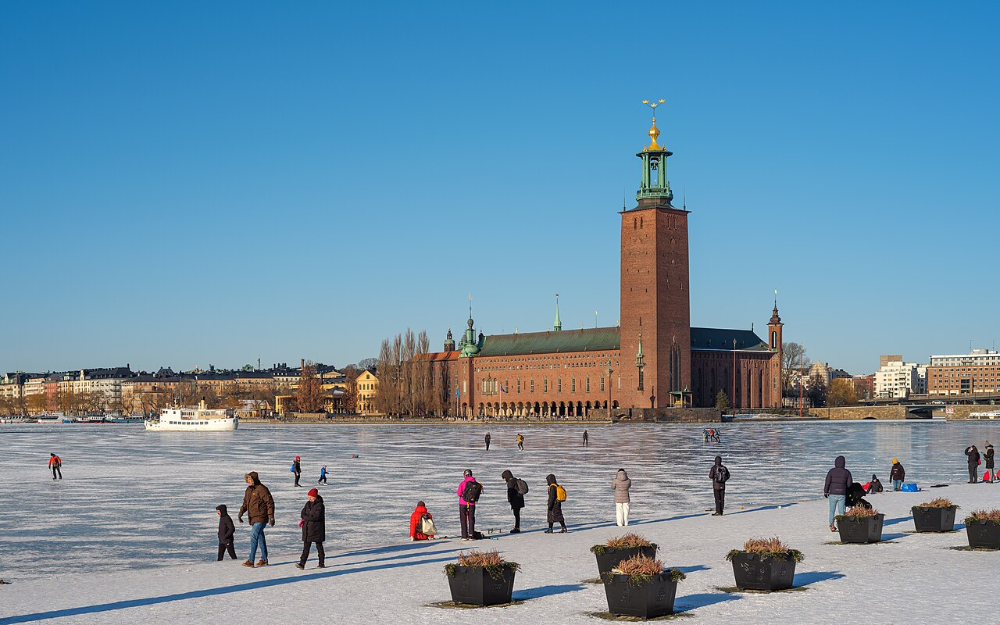
stockholm
File:Stockholms stadshus February 2026 02.jpg
Photographer: ArildV
Source and identity/location metadata · CC BY-SA 4.0
Commons thumbnail, CSS cover crop and dark overlay only; no changes to downloaded pixels.
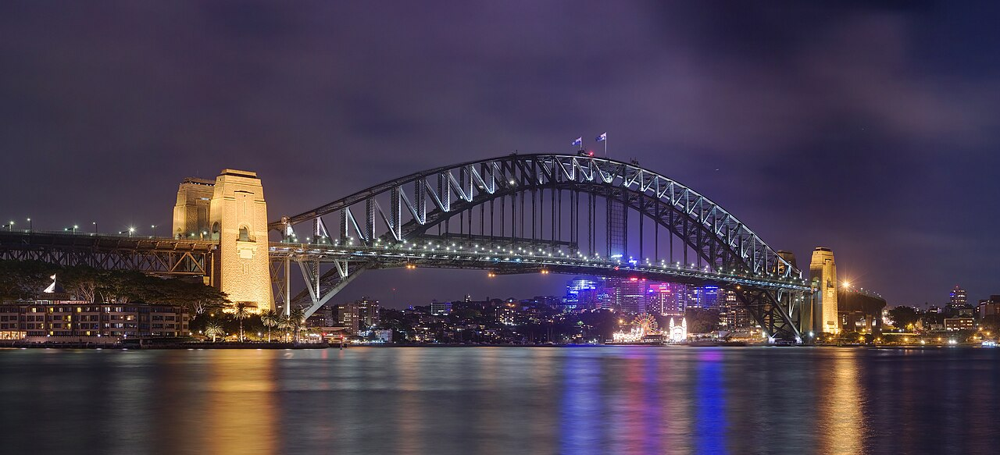
sydney
File:Sydney Harbour Bridge from Circular Quay.jpg
Photographer: JJ Harrison (https://www.jjharrison.com.au/)
Source and identity/location metadata · CC BY-SA 3.0
Commons thumbnail, CSS cover crop and dark overlay only; no changes to downloaded pixels.
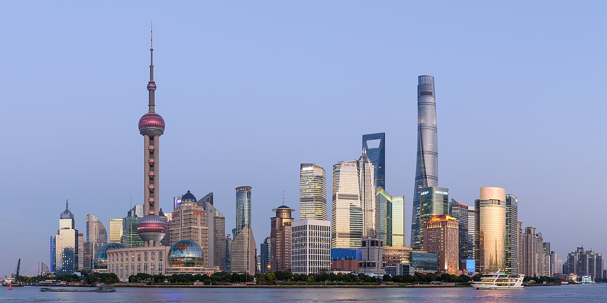
shanghai
File:Pudong Shanghai November 2017 panorama.jpg
Photographer: King of Hearts
Source and identity/location metadata · CC BY-SA 4.0
Commons thumbnail, CSS cover crop and dark overlay only; no changes to downloaded pixels.
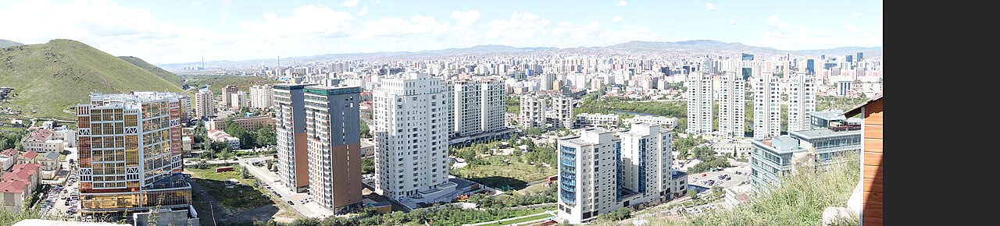
ulaanbaatar
File:Panorama von Ulaanbaatar (2023).jpg
Photographer: Schwalbe
Source and identity/location metadata · CC BY-SA 4.0
Commons thumbnail, CSS cover crop and dark overlay only; no changes to downloaded pixels.
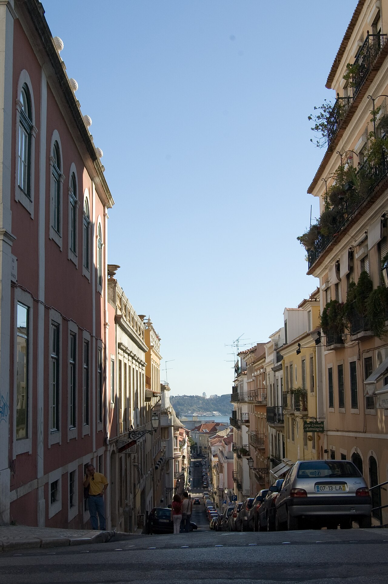
lisbon
File:Lisbon city (1439238681).jpg
Photographer: Feliciano Guimarães from Guimarães, Portugal
Source and identity/location metadata · CC BY 2.0
Commons thumbnail, CSS cover crop and dark overlay only; no changes to downloaded pixels.
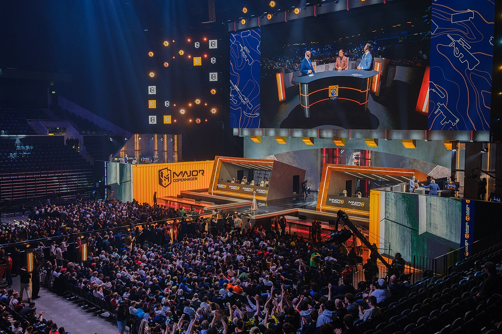
cs-stage-01
File:PGL CS2 Major Copenhagen 2024 stage - 01.jpg
Photographer: European Parliament
Source and identity/location metadata · CC BY 2.0
Commons thumbnail, CSS cover crop and dark overlay only; no changes to downloaded pixels.
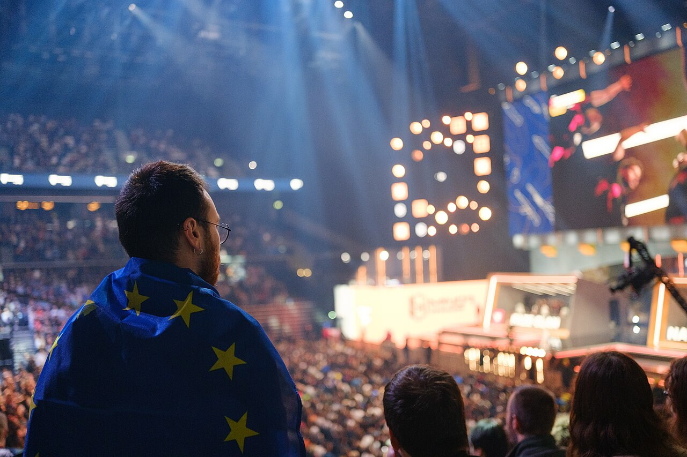
cs-stage-03
File:PGL CS2 Major Copenhagen 2024 stage - 03.jpg
Photographer: European Parliament
Source and identity/location metadata · CC BY 2.0
Commons thumbnail, CSS cover crop and dark overlay only; no changes to downloaded pixels.
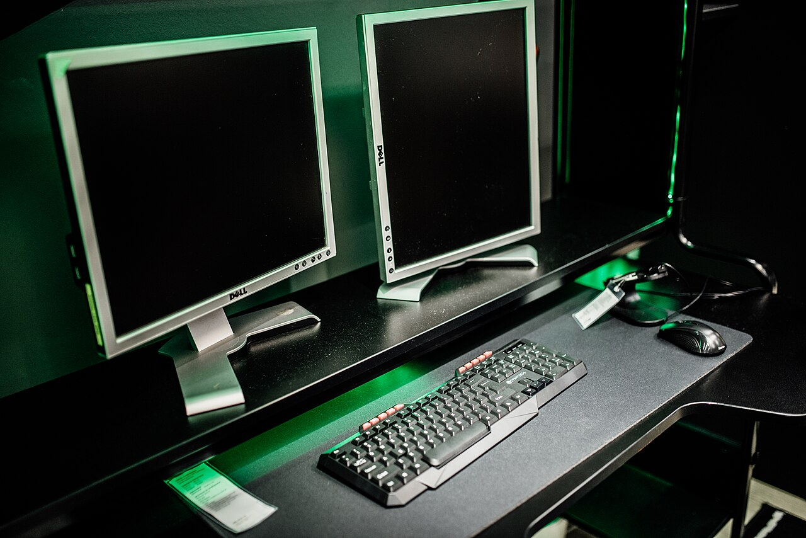
gaming-setup
File:Dual monitor setup in a gaming room with keyboard and mouse in focus.jpg
Photographer: Shixart1985
Source and identity/location metadata · CC BY 2.0
Commons thumbnail, CSS cover crop and dark overlay only; no changes to downloaded pixels.
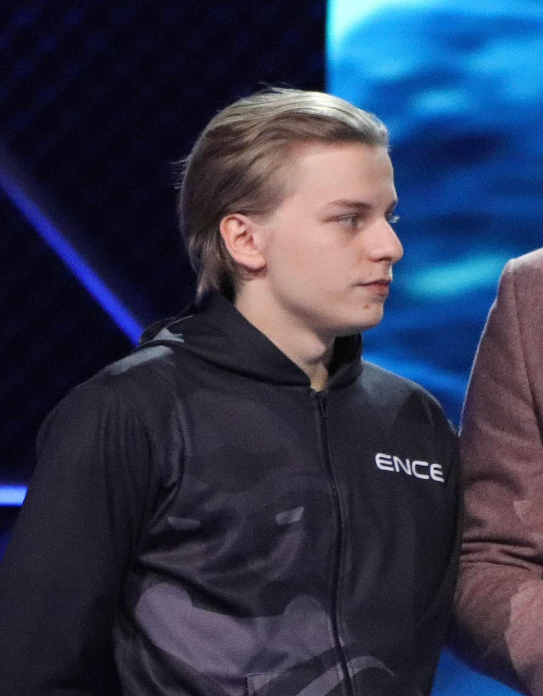
aleksib-2019
File:IEM Katowice 2019 IMG 1680 (46485173585) (cropped).jpg
Photographer: Esports Kingdom
Source and identity/location metadata · CC BY 2.0
Commons thumbnail, CSS cover crop and dark overlay only; no changes to downloaded pixels.
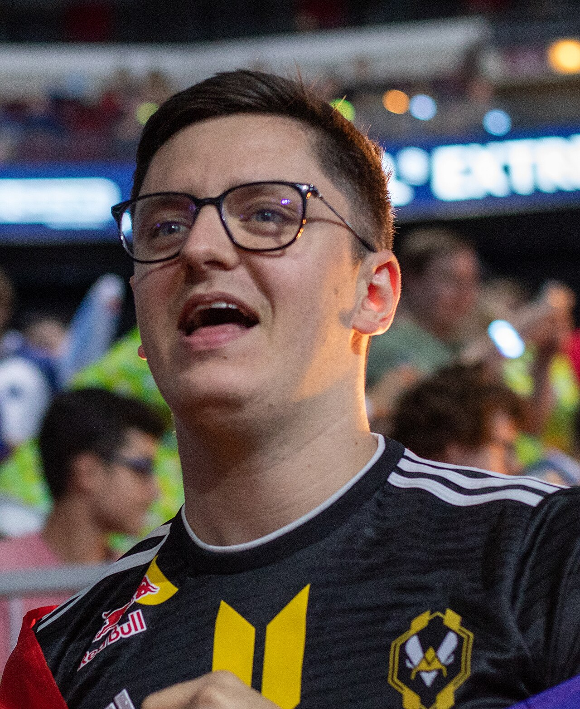
apex-2019
File:ApEX IEM Chicago Final Edits-9730 (48353577346) (cropped).jpg
Photographer: Esports Kingdom
Source and identity/location metadata · CC BY 2.0
Commons thumbnail, CSS cover crop and dark overlay only; no changes to downloaded pixels.
ropz-2023
File:Ropz at IEM Sydney 2023 - 01 (cropped).jpg
Photographer: Karrigan
Source and identity/location metadata · CC BY 3.0
Commons thumbnail, CSS cover crop and dark overlay only; no changes to downloaded pixels.
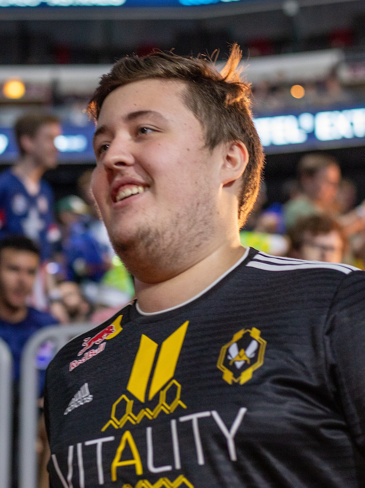
zywoo-2019
File:IEM Chicago Final Edits-9731 ZywOo (48353577846) (cropped).jpg
Photographer: Esports Kingdom
Source and identity/location metadata · CC BY 2.0
Commons thumbnail, CSS cover crop and dark overlay only; no changes to downloaded pixels.

.jpg){kind=link}


.jpg){kind=link}
.jpg){kind=link}


_(cropped).jpg){kind=link}
_(cropped).jpg){kind=link}
.jpg){kind=link}
_(cropped).jpg){kind=link}